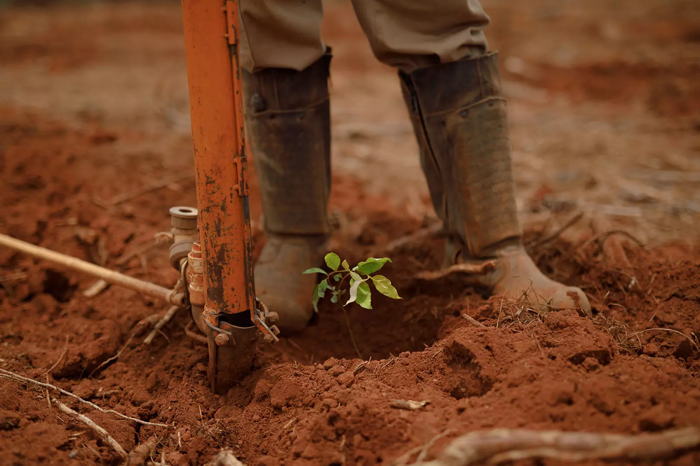

Pra quem nunca implementou florestas em sua propriedade pode ser existam algumas dúvidas se a terra disponível em seu terreno é adequada para esse tipo de plantio.
Para explicar melhor o tema, reunimos informações dos tipos de terreno, solo, clima e demais especificações que garantem maior probabilidade de sucesso no crescimento da floresta.
Já adiantamos: fazer uma plantação não é nada complicado, desde que com as orientações e técnicas adequadas.
De modo geral, o pínus e o eucalipto são espécies florestais que se adaptam a várias condições.
Por isso, mesmo que a terra à disposição não seja a mais favorável, é possível manter um ciclo florestal de sucesso.
O detalhe é ter esse cuidado de definirmos a melhor espécie e forma de manejo para atender as condições daquele terreno, solo e clima”, afirma James Stahl, pesquisador em Solos e Manejo Silvicultural.
- Terreno a ser utilizado, que, independente de ser plano ou acidentado, deve possuir fácil acesso, para permitir o plantio, manutenção e colheita;
- A espécie de pínus e/ou eucalipto que melhor se adaptará aquela terra. Podendo, até mesmo, fazer um zoneamento para alocar mais de um material genético em uma mesma área;
- Averiguar a profundidade efetiva do solo, que pode variar de vinte centímetros a mais de dois metros. Tendo em vista que, quanto mais profundo o solo, mais capacidade produtiva ele vai ter;
- Avaliar se o solo é mais argiloso ou mais arenoso. O solo arenoso possui menor fertilidade natural, por isso, no momento da implantação, exige dosagens maiores de nutrientes que devem ser repostos via adubação, para deixá-lo propício para o plantio;
- Analisar o clima. A temperatura e os fenômenos naturais podem influenciar no plantio e desenvolvimento da floresta.
Além de sua grande viabilidade, o cultivo de florestas contribui para diversificar e otimizar a produção rural, através da utilização de terras ociosas e implementação do Sistema ILPF, que harmoniza lavoura, pecuária e floresta.
explica James.
O pesquisador ainda conta que um ganho adicional das florestas de pínus e eucalipto é a recuperação das áreas de pastagens degradadas com processos erosivos.